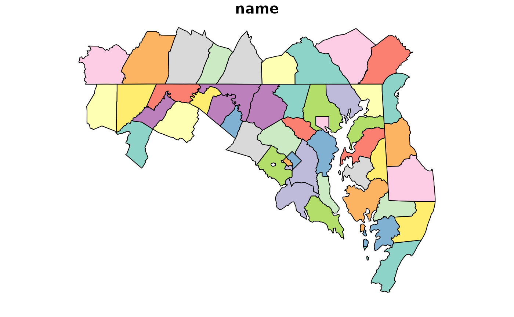

Get U.S. State and County boundary data (1:5 mi scale) for a location
Source:R/get_admin_data.R
get_admin_data.RdGet U.S. states and counties from packaged us_counties or us_states data.
See get_tigris_data() for more options.
Usage
get_states(
location = NULL,
dist = NULL,
diag_ratio = NULL,
unit = NULL,
asp = NULL,
class = "df",
call = caller_env(),
...
)
get_counties(
location = NULL,
dist = NULL,
diag_ratio = NULL,
unit = NULL,
asp = NULL,
class = "df",
...
)Arguments
- location
A
sf,sfc, orbboxobject or a character string that matches a geoid, name, abb, or statefp for us_states or us_counties.- dist
buffer distance in units. Optional.
- diag_ratio
ratio of diagonal distance of area's bounding box used as buffer distance. e.g. if the diagonal distance is 3000 meters and the "diag_ratio = 0.1" a 300 meter will be used. Ignored when
distis provided.- unit
Units for buffer. Supported options include "meter", "foot", "kilometer", and "mile", "nautical mile" Common abbreviations (e.g. "km" instead of "kilometer") are also supported. Distance in units is converted to units matching GDAL units for x; defaults to "meter"
- asp
Aspect ratio of width to height as a numeric value (e.g. 0.33) or character (e.g. "1:3"). If numeric,
get_asp()returns the same value without modification.- class
Class of data to return, "df" (default), "sf", "bbox", or "sfc"
- call
The execution environment of a currently running function, e.g.
call = caller_env(). The corresponding function call is retrieved and mentioned in error messages as the source of the error.You only need to supply
callwhen throwing a condition from a helper function which wouldn't be relevant to mention in the message.Can also be
NULLor a defused function call to respectively not display any call or hard-code a code to display.For more information about error calls, see Including function calls in error messages.
- ...
Additional parameters including geoid, name, state, or county. These additional identifier parameters are only used if location is
NULL.
Examples
get_states(
location = "Maryland"
)
#> # A tibble: 1 × 7
#> name geoid abb est_pop statefp bbox wkt
#> <chr> <chr> <chr> <dbl> <chr> <list> <chr>
#> 1 Maryland 24 MD 6018848 24 <bbox [4]> MULTIPOLYGON (((-8465780 4578…
get_counties(
name = "Baltimore city, Maryland"
)
#> # A tibble: 1 × 9
#> name name_short abb_state est_pop geoid countyfp statefp bbox wkt
#> <chr> <chr> <chr> <dbl> <chr> <chr> <chr> <list> <chr>
#> 1 Baltimore ci… Baltimore MD 609032 24510 510 24 <bbox> MULT…
# Using short names with abbreviated state names for look-up may result in inexact matches
get_counties(
county = "Baltimore, MD"
)
#> # A tibble: 2 × 9
#> name name_short abb_state est_pop geoid countyfp statefp bbox wkt
#> <chr> <chr> <chr> <dbl> <chr> <chr> <chr> <list> <chr>
#> 1 Baltimore Co… Baltimore MD 828018 24005 005 24 <bbox> MULT…
#> 2 Baltimore ci… Baltimore MD 609032 24510 510 24 <bbox> MULT…
# Two-digit integer GeoIDs are supported
# bbox and wkt columns are dropped when returning class "sf"
get_states(
geoid = 24,
class = "sf"
)
#> Simple feature collection with 1 feature and 5 fields
#> Geometry type: MULTIPOLYGON
#> Dimension: XY
#> Bounding box: xmin: -8848525 ymin: 4566962 xmax: -8354410 ymax: 4825788
#> Projected CRS: WGS 84 / Pseudo-Mercator
#> # A tibble: 1 × 6
#> name geoid abb est_pop statefp geometry
#> <chr> <chr> <chr> <dbl> <chr> <MULTIPOLYGON [m]>
#> 1 Maryland 24 MD 6018848 24 (((-8465780 4578058, -8465715 4580663, -…
# sf locations are used as a spatial filter
plot(
get_counties(
location = get_states("MD", class = "sf"),
class = "sf"
),
max.plot = 1
)
